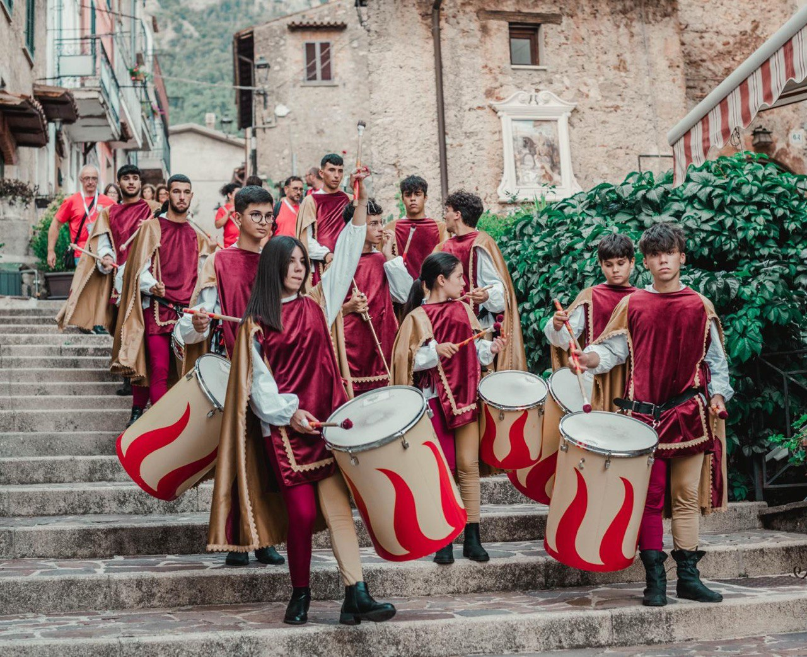

Attività
Le nostre attività principali
Clicca su ogni attività per scoprire maggiori dettagli
Tamburi Medievali
 
I Tamburi Medievali sono il battito della nostra associazione: con prove settimanali e tanta passione, il gruppo anima cortei, rievocazioni e festival, trasmettendo energia e tradizione. Le loro esibizioni sono un momento di aggregazione e spettacolo che coinvolge giovani e famiglie.
- Prove settimanali aperte ai giovani
- Partecipazione a festival storici
- Collaborazioni con altri gruppi folkloristici
Nuovo Progetto in Arrivo

Il prossimo progetto dell’associazione sarà dedicato all’innovazione sociale e alla partecipazione attiva: attività, laboratori e incontri pensati per favorire l’inclusione, la creatività e il dialogo tra generazioni. Presto tutte le informazioni su come aderire!
- Attività innovative per tutte le età
- Collaborazione con enti e associazioni del territorio
- Opportunità di volontariato e formazione